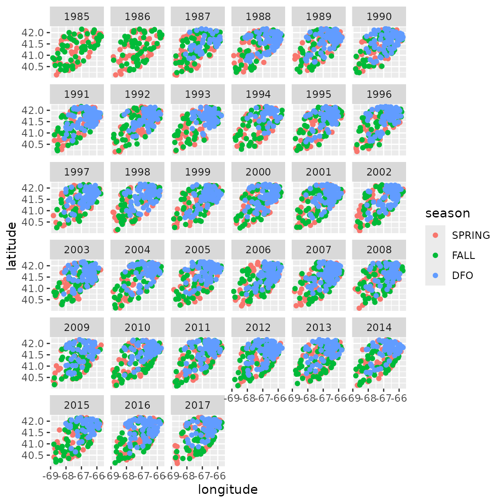
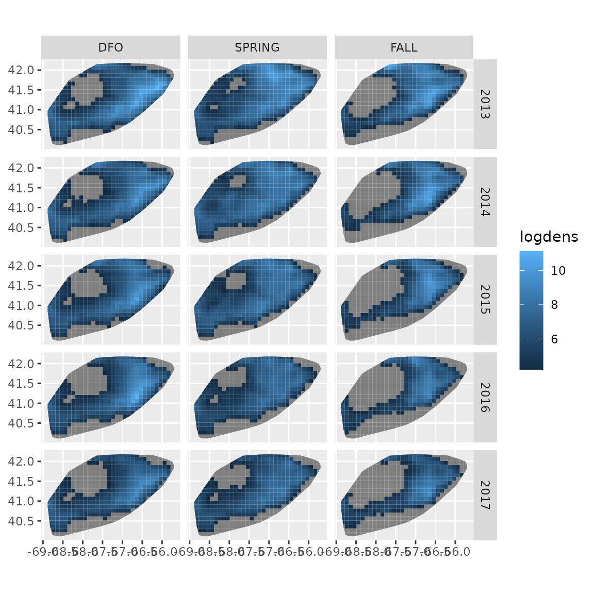
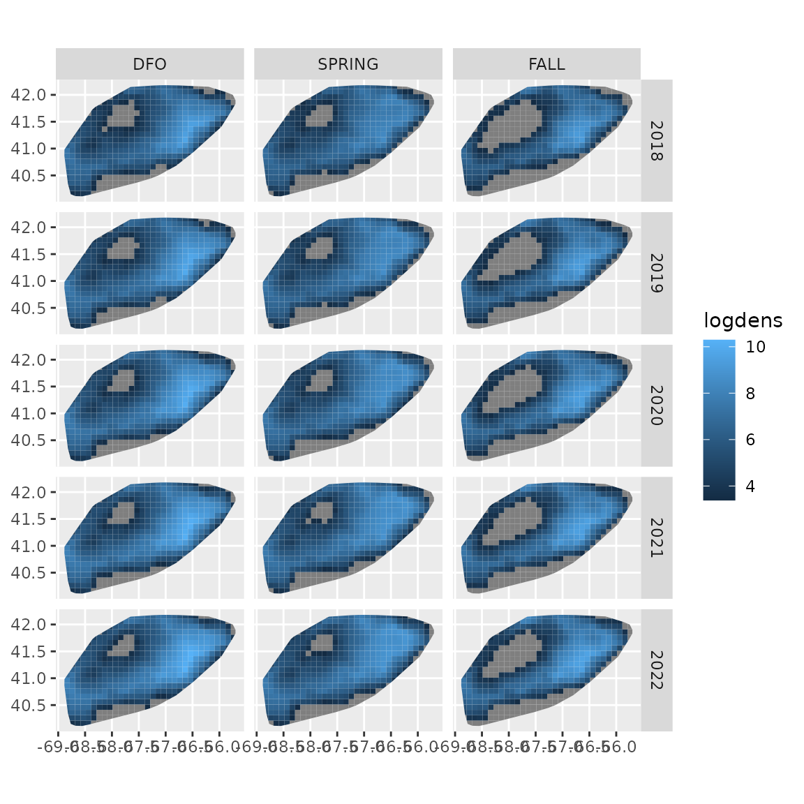
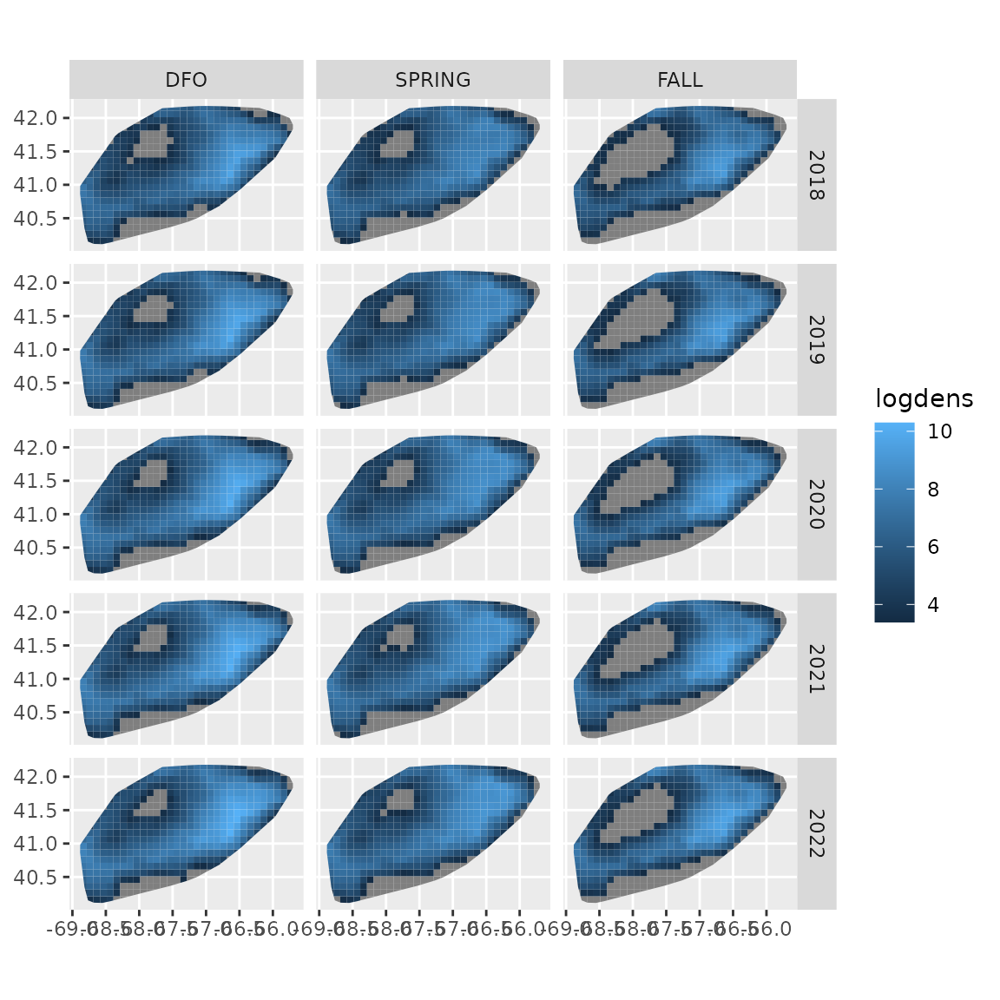

Seasonal index standardization
James T. Thorson
Source:vignettes/web_only/seasonal_index.Rmd
seasonal_index.RmdtinyVAST can estimate seasonal spatio-temporal models
using spatially varying coefficients (James T.
Thorson et al. 2023) to incorporate additional spatial variation
by season and then including an autoregressive spatio-temporal process
across season-within-year indices. This was originally demonstrated
using package VAST (James T. Thorson et al.
2020), and we here show code analyzing spring and fall
bottom-trawl surveys for yellowtail flounder in the Northwest Atlantic
conducted by the NEFSC, as well as a early-spring bottom trawl survey by
DFO Canada. Here, we use a spatio-temporal process with three seasons
per year, and estimating a lag-1 correlation (representing correlations
among seasons within year) and a lag-3 correlation (representing
correlations within season among years).
# Load data
data( atlantic_yellowtail )
# Plot data extent
ggplot( atlantic_yellowtail ) +
geom_point( aes(x=longitude, y = latitude, col = season) ) +
facet_wrap( vars(year) )
We then define a new year_season variable
# Define levels
atlantic_yellowtail$season =
factor(atlantic_yellowtail$season, levels = c("DFO", "SPRING", "FALL"))
n_years = max(atlantic_yellowtail$year) - min(atlantic_yellowtail$year) + 1
n_seasons = nlevels(atlantic_yellowtail$season)
# convert to an integer
atlantic_yellowtail$season_year_integer =
n_seasons * (atlantic_yellowtail$year - min(atlantic_yellowtail$year)) +
as.numeric(atlantic_yellowtail$season) - 1
# log-scale area swept
atlantic_yellowtail$log_swept = log(atlantic_yellowtail$swept)
# Add variable column
atlantic_yellowtail$var = "density"We then define argument spatial_varying as a formula
containing the space-season effect, and in this instance it replaces the
space_term:
# Define mesh
mesh = fm_mesh_2d(
atlantic_yellowtail[,c('longitude','latitude')],
cutoff = 0.2
)
# define formula log-area-swept offset, and different in mean by season
formula = weight ~ season + offset(log_swept)
# Define SVC by season
spatial_varying = ~ season
spacetime_term = "
density -> density, 1, ar_st_season
density -> density, 3, ar_st_year
density <-> density, 0, sd_st
"
time_term = "
density -> density, 1, ar_t_season
density -> density, 3, ar_t_year
density <-> density, 0, sd_t
"
# fit using tinyVAST
fit = tinyVAST(
data = droplevels(atlantic_yellowtail),
# Specification
formula = formula,
spatial_varying = spatial_varying,
spacetime_term = spacetime_term,
time_term = time_term,
spatial_domain = mesh,
family = tweedie("log"),
# Indexing
space_columns = c("longitude",'latitude'),
time_column = "season_year_integer",
times = seq_len(n_seasons * n_years),
variable_column = "var",
# Settings
control = tinyVASTcontrol(
# profile = "alpha_j"
)
)
#> Warning: The model may not have converged: non-positive-definite Hessian
#> matrix.We can inspect output, and see that both season-within-year (lag-1) and season-across-year (lag-3) terms are significant:
summary(fit, "spacetime_term")
#> heads to from parameter start lag Estimate Std_Error z_value
#> 1 1 density density 1 <NA> 1 0.2460269 0.04389256 5.605207
#> 2 1 density density 2 <NA> 3 0.5267712 0.04868399 10.820213
#> 3 2 density density 3 <NA> 0 1.3015125 0.05159715 25.224503
#> p_value
#> 1 2.080067e-08
#> 2 2.761334e-27
#> 3 2.157556e-140We can then visualize density in selected years. To do this, we first define a predictive grid
# get sf for sampling points
sf_locs = st_as_sf(
atlantic_yellowtail,
coords = c("longitude","latitude")
)
sf_locs = st_sf(
sf_locs,
crs = st_crs("EPSG:4326")
)
# make convex hull for domain
sf_domain = st_convex_hull(
st_union(sf_locs)
)
# Make grid in domain
sf_grid = st_make_grid(
sf_domain,
cellsize = c(0.1,0.1)
)
sf_grid = st_intersection(
sf_grid, sf_domain
)
# Data frame for prediction
grid_coords = st_coordinates(st_centroid(sf_grid))
grid_coords = cbind(
sf_grid,
setNames( data.frame(grid_coords), c("longitude","latitude")),
swept = as.numeric(st_area(sf_grid)) / 1e6,
grid = seq_len(length(sf_grid))
)We then select a set of years and seasons, predict those values, and then plot them
# season_year
newdata = expand.grid(
season = levels(atlantic_yellowtail$season),
year = 2013:2017,
grid = seq_len(length(sf_grid))
)
#
newdata = merge( newdata, grid_coords )
newdata$log_swept = log(newdata$swept)
# Define levels
newdata$season =
factor(newdata$season, levels = c("DFO", "SPRING", "FALL"))
# convert to an integer
newdata$season_year_integer =
n_seasons * (newdata$year - min(atlantic_yellowtail$year)) +
as.numeric(newdata$season) - 1
# Predict
newdata$logdens = predict(
fit,
newdata = newdata,
what = "p_g"
)
# Censor low densities to show high densities better
newdata$logdens = ifelse(
newdata$logdens < (max(newdata$logdens) - log(1000) ),
NA,
newdata$logdens
)
ggplot(newdata) +
geom_sf( aes(fill = logdens, geometry = geometry), col = NA ) +
facet_grid( rows = vars(year), cols = vars(season) )
We can also project the model. To do so, we first rebuild the
newdata argument for the projection period (which would
involve forecasted covariates if we were including any) while selecting
the forecast interval:
# season_year
projdata = expand.grid(
season = levels(atlantic_yellowtail$season),
year = 2018:2022,
grid = seq_len(length(sf_grid))
)
#
projdata = merge( projdata, grid_coords )
projdata$log_swept = log( projdata$swept )
# Define levels
projdata$season =
factor(projdata$season, levels = c("DFO", "SPRING", "FALL"))
# convert to an integer
projdata$season_year_integer =
n_seasons * (projdata$year - min(atlantic_yellowtail$year)) +
as.numeric(projdata$season) - 1we then use the project function, and show a
deterministic projection:
#
projdata$logdens = project(
object = fit,
extra_times = (n_seasons * n_years) + 1:24,
newdata = projdata,
what = "p_g",
future_var = FALSE,
past_var = FALSE,
parm_var = FALSE
)
# Censor low densities to show high densities better
projdata$logdens = ifelse(
projdata$logdens < (max(projdata$logdens) - log(1000) ),
NA,
projdata$logdens
)
ggplot(projdata) +
geom_sf( aes(fill = logdens, geometry = geometry), col = NA ) +
facet_grid( rows = vars(year), cols = vars(season) )
We then show a single draw from the stochastic projection
# Set seed for reproducibility
set.seed(123)
#
projdata$logdens = project(
object = fit,
extra_times = (n_seasons * n_years) + 1:24,
newdata = projdata,
what = "p_g",
future_var = TRUE,
past_var = FALSE,
parm_var = FALSE
)
# Censor low densities to show high densities better
projdata$logdens = ifelse(
projdata$logdens < (max(projdata$logdens) - log(1000) ),
NA,
projdata$logdens
)
ggplot(projdata) +
geom_sf( aes(fill = logdens, geometry = geometry), col = NA ) +
facet_grid( rows = vars(year), cols = vars(season) )
Runtime for this vignette: 7.33 mins